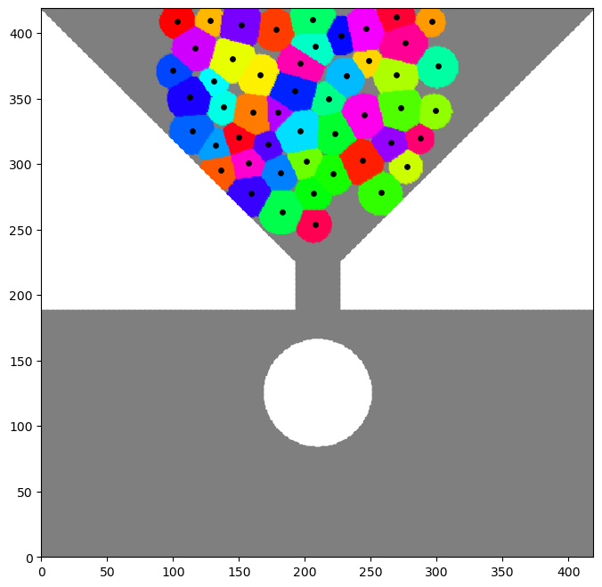
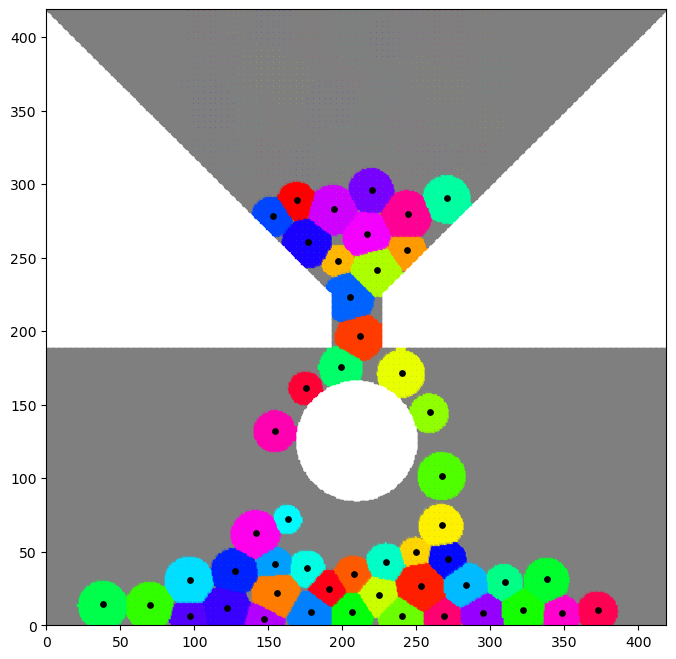

Note
Go to the end to download the full example code.
Tutorial
This tutorial shows how to use the main features of the library. Most of the examples in the gallery are built on these elements.
First some standard imports
# sphinx_gallery_thumbnail_path = '_static/tutorial_plot.png'
import os
import sys
sys.path.append("..")
import math
import torch
from matplotlib import pyplot as plt
ICeShOT can run on a GPU (much faster) if there is one vailable or on the CPU otherwise.
use_cuda = torch.cuda.is_available()
if use_cuda:
torch.set_default_tensor_type("torch.cuda.FloatTensor")
device = "cuda"
else:
torch.set_default_tensor_type("torch.FloatTensor")
device = "cpu"
Let us first define the domain in which the simulation takes place. For this we need to sample the source points using the following module.
from iceshot import sample
The main function simply sample a uniform grid of a given size on the unit cube.
M = 512 # grid resolution
dim = 2 # dimension
grid = sample.sample_grid(M,dim=dim,device=device)
In order to have a more funny case, let us crop the domain in a hourglass shape with an obstacle at the end of the funnel.
The following function returns 0 if the source point does not belong to the domain and a positive value otherwise. We keep only the source points in the domain.
cut = 0.03 # define the bottom of the domain
o_cnt = 0.5 * torch.ones((1,dim)) # obstacle center
o_cnt[:,-1] = 0.3
R_o = 0.1 # obstacle radius
tunnel_size = 0.04 # tunnel width
def crop_function(x):
cnt = 0.5 * torch.ones((1,dim))
xc = x - cnt
upper_cone = (xc[:,-1]>cut).float() * ((xc[:,:-1]**2).sum(1)<xc[:,-1]**2).float()
below = (xc[:,-1]<cut-2*tunnel_size).float()
tunnel = ((xc[:,:-1]**2).sum(1) < tunnel_size**2).float() * (1-below)
obstacle = (((x - o_cnt)**2).sum(1) > R_o**2).float()
return upper_cone + below*obstacle + tunnel
real_points = crop_function(grid)>0
source = grid[real_points,:]
Note
One can also use the function
source = sample.sample_cropped_domain(crop_function,n=M,dim=dim)
Now we sample N seed points in the upper part of the domain
N = 50
cnt_seeds = 0.5*torch.ones((1,dim))
size_seeds = 0.3
cnt_seeds[:,-1] = 1.0 - size_seeds/2
seeds = size_seeds*(torch.rand((N,dim))-0.5) + cnt_seeds
Most importantly, we give a volume to these particles
vol_x = 1.0 + 2.0*torch.rand(N) # We sample volumes with a ratio 1/3 between the smaller and larger particles
vol_x *= 0.25/vol_x.sum() # Normalize the volume so that the particles fill 25% of the total volume
vol0 = vol_x.mean().item() # Mean volume
R0 = math.sqrt(vol0/math.pi) if dim==2 else (vol0/(4./3.*math.pi))**(1./3.) # Mean particle size
We now instantiate a particle system and check that each particle has enough pixels.
from iceshot import cells
simu = cells.Cells(
seeds=seeds,source=source,
vol_x=vol_x,extra_space="void"
)
res = int(simu.volumes.min().item()/simu.vol_grid) # Number of voxels for the smallest particle.
print(f"Minimul number of voxels for one particle: {res}")
if res<150:
raise ValueError("Resolution is too small!")
We also need to introduce an optimal transport solver. To do so, we first need a cost function. We choose a simple power cost with exponent 2.
from iceshot import costs
from iceshot import OT
from iceshot.OT import OT_solver
p = 2
cost_params = {
"p" : p,
"scaling" : "volume",
"R" : R0,
"C" : 0.25
}
solver = OT_solver(
n_sinkhorn=100,n_sinkhorn_last=100,n_lloyds=5,
cost_function=costs.power_cost,cost_params=cost_params
)
Note
The parameters R and C are scaling factors, they usually do not matter much but might affect the stability of the algorithm.
The parameters n_sinkhorn and n_lloyds define the number of iterations and epoch of the optimization algorithms. They are important for the Sinkhorn algorithm but are essentially harmless for the preferred LBFGS-B algorithm which usually converges in a few iterations anyway.
We can finally solve the optimization problem. As it is the initial step, we use Lloyd algorithm to ensure a reasonable initial configuration
solver.solve(simu,
sinkhorn_algo=OT.LBFGSB,
tau=1.0,
to_bary=True,
show_progress=False,
bsr=True,
weight=1.0)
We can plot this initial configuration.
from iceshot import plot_cells
simu_plot = plot_cells.CellPlot(simu,figsize=8,cmap=plt.cm.hsv,
plot_pixels=True,plot_scat=True,plot_quiv=False,plot_boundary=False,
scat_size=15,scat_color='k',
plot_type="scatter",void_color='tab:grey')
This should produce an initial configuration which looks like this:
{kind=link}
Note
The plot_type for cropped domain should be scatter and imshow for the full unit cube.
Note
Currently, the option plot_boundary which plots the boundary of the cells is a bit slow.
Let us now assume that the particles simply fall down, with a constant force defined by
F = torch.zeros((1,dim))
F[0,-1] = -0.5
The gradient step in factor of the incompressibilty force is set to
tau = 3.0/R0 if dim==2 else 3.0/(R0**2)
We need to define some time-stepping parameters
T = 3.0 # Simulation time
dt = 0.002 # Time step
plot_every = 150 # Do not plot all the time steps
t = 0.0 # Time counter
t_iter = 0 # Counter of iterations
t_plot = 0 # Counter of plots
We simply loop over time.
solver.n_lloyds = 1 # Only one epoch is enough since we make small time steps.
while t<T:
print("--------------------------",flush=True)
print(f"t={t}",flush=True)
print("--------------------------",flush=True)
plotting_time = t_iter%plot_every==0
print("I plot.",flush=True) if plotting_time else print("I do not plot.",flush=True)
F_inc = solver.lloyd_step(simu,
sinkhorn_algo=OT.LBFGSB,
tau=tau,
to_bary=False,
show_progress=False,
default_init=False,bsr=True)
simu.x += F*dt + F_inc*dt # Sum the incompressibility force and the gravity force.
print(f"Maximal incompressibility force: {torch.max(torch.norm(F_inc,dim=1))}",flush=True)
if plotting_time:
simu_plot.update_plot(simu)
simu_plot.fig.show()
t_plot += 1
t += dt
t_iter += 1
simu_plot.fig
The final configuration should looks like this:
{kind=link}